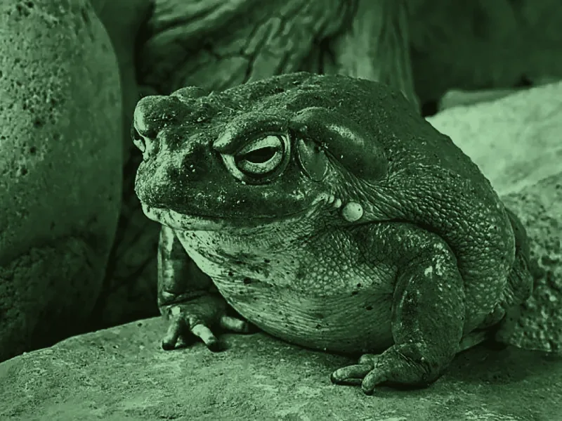

Breaking through
The medicine facilitates a journey that allows people to release emotional, mental, and spiritual blockages — often the root causes of depression, anxiety, and PTSD.

About Bufo
Bufo alvarius — the Sonoran Desert Toad — and the 5-MeO-DMT it carries. Revered for centuries, approached with reverence still.
What It Is
The Bufo alvarius toad, also known as the Sonoran Desert Toad, is a sacred and revered medicine used for centuries in indigenous healing traditions. This toad produces a potent secretion containing 5-MeO-DMT, a powerful compound known for its ability to facilitate profound healing, spiritual awakening, and deep transformative experiences.
The medicine is traditionally harvested in a sustainable and respectful manner, and has gained increasing attention in modern times for its effects on both mental and physical well-being.
Spiritual & Psychological
In ceremonial settings, Bufo is known for inducing what is often called a mystical or ego-dissolution state — where the boundaries between self and universe dissolve.
The medicine facilitates a journey that allows people to release emotional, mental, and spiritual blockages — often the root causes of depression, anxiety, and PTSD.
Many report a profound sense of unity with the universe, and receive guidance toward their true calling, purpose, and connection to higher realms.
By surrendering the ego, participants often experience deep emotional release from past wounds, fostering balance and harmony.
The Science
The primary active compound in the Bufo alvarius secretion is 5-MeO-DMT, a potent tryptamine that works similarly to other DMT compounds but with significant differences. Where DMT is known for vivid visual hallucinations, 5-MeO-DMT tends to produce a more intense, short-lived experience of profound unity, often without the visuals. That difference makes it a unique tool in healing ceremonies and spiritual exploration.
When 5-MeO-DMT is ingested it binds to serotonin receptors in the brain, particularly the 5-HT2A receptor — an action similar to other psychedelics but far more potent, resulting in an immediate and powerful shift in consciousness. Studies suggest this interaction can promote neural plasticity: the brain's ability to form new connections, which is key to overcoming past trauma and changing long-held patterns of thought.
Research indicates that psychedelics like 5-MeO-DMT may stimulate neurogenesis and increase brain connectivity, with early studies pointing to a role in easing anxiety, depression, and substance addiction. The bliss and emotional release often reported during ceremony is attributed to activation of the brain's reward systems, including the release of endorphins.
Physical
Beyond the spiritual and psychological, Bufo is also believed to carry physical benefits, especially in relation to the body's energy systems. Many report a profound sense of rejuvenation after ceremony.
Ceremonial Use
The Sonoran Desert Toad's secretion has been used for centuries in sacred, shamanic rituals by indigenous groups, particularly across the Americas. These rituals take place in a ceremonial context, with trained facilitators who hold safety, comfort, and integration.
The medicine is received through smoking, which allows for a rapid onset. The journey is often intense, with effects lasting roughly 15 to 30 minutes, followed by a period of integration where you reflect on the experience with the support of your facilitator.
Approached with reverence, wisdom, and guidance, Bufo alvarius can be a profound ally on the path of self-discovery, healing, and spiritual awakening.
Begin
Every ceremony begins with a health screening — your safety and readiness are honored every step of the way.